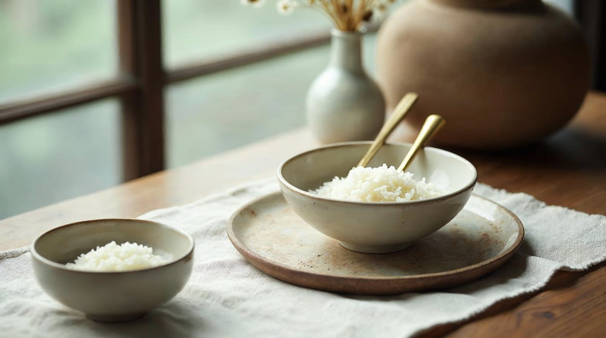
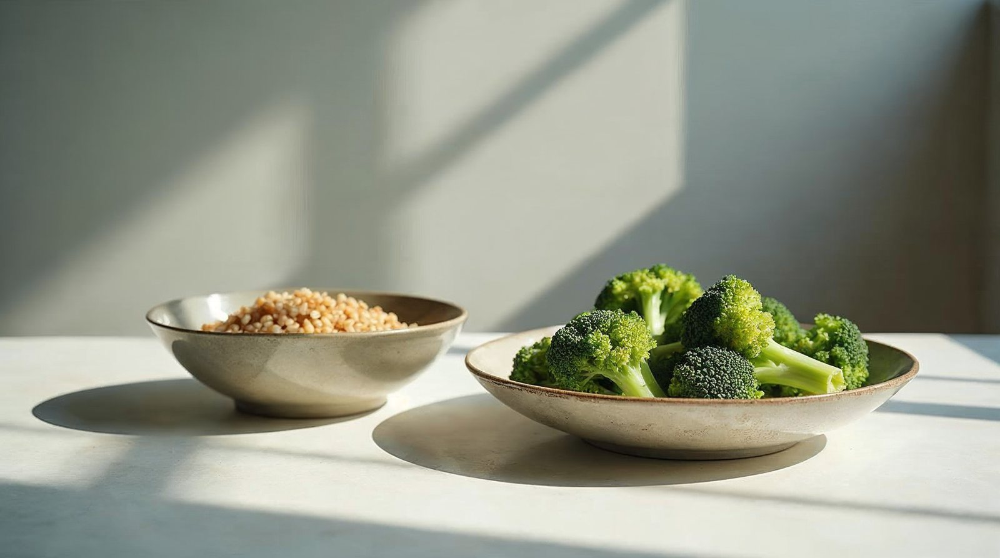
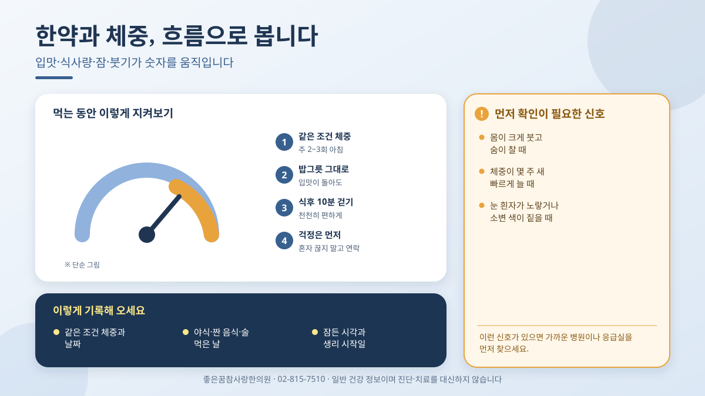

이종호 한의사 감수좋은꿈참사랑한의원 대표원장 (한의사 면허번호 19769)발행 2026-11-26 · 수정 2026-11-27
이 글의 차례
한약 상담을 마칠 즈음, 조심스럽게 물으시는 분이 계세요. "원장님, 그런데 한약 먹으면 살찐다던데요. 저 요즘 체중 관리 중이거든요." 옆에서 듣던 가족도 고개를 끄덕이시고요. 어릴 때 보약을 먹고 나서 통통해졌다는 얘기를 집안 어른께 들었다는 분도 계세요.
이 걱정은 아주 오래된 얘기이고, 지금도 진료실에서 꽤 자주 들어요. 특히 체중에 신경 쓰는 분, 다이어트를 해 본 적이 있는 분, 사춘기 자녀를 둔 부모님일수록 이 부분을 먼저 물어보세요.
저는 이 질문을 받으면 반가워요. 걱정을 마음에 담아 둔 채 한약을 드시는 것보다, 처음부터 꺼내 놓고 얘기하는 게 훨씬 좋거든요. 무엇이 체중을 움직이는지 알고 나면 막연한 불안이 조금 가벼워져요.
그러니까 사실은 '한약을 먹었다'와 '살이 쪘다' 사이에 다른 얘기가 하나 더 끼어 있는 경우가 많아요. 입맛이 돌아 식사량이 늘었는지, 잠과 활동이 달라졌는지 같은 생활의 변화요. 그래서 저는 숫자 하나보다 그 사이의 얘기를 같이 봐요.
체중 신경 쓰시는 마음, 저도 잘 알아요. 저도 늘 체중과 씨름하는 사람이거든요. 그러니 이런 걱정을 꺼내시는 걸 부끄러워하지 않으셔도 돼요.
이 글에서는 한약과 체중 사이에 어떤 얘기가 숨어 있는지, 먹는 동안 무엇을 지켜보고 알려 주시면 좋은지를 차례로 풀어 볼게요.
한약을 먹으면 정말 살이 찌나요?
한약을 먹었다는 사실 하나만으로 체중이 는다고 단정하기는 어렵습니다. 한약은 사람마다, 목적마다 구성이 다르고, 같은 한약을 먹어도 체중이 그대로인 분, 늘어난 분, 오히려 줄어든 분이 함께 계십니다. 그래서 한약이라는 이름 하나로 살이 찐다, 안 찐다를 나누기는 어렵습니다.
다만 한약을 먹는 기간에 체중이 늘었다고 느끼는 분이 계신 것도 사실입니다. 그럴 때는 한약 자체보다 그 기간에 몸과 생활에서 무엇이 달라졌는지를 함께 살펴보면 이유가 보이는 경우가 많습니다. 가장 흔한 것이 입맛과 식사량의 변화입니다.
예를 들어 소화가 약하고 입맛이 없어 늘 끼니를 대충 넘기던 분이, 속이 편해지면서 밥을 제대로 먹게 되는 경우가 있습니다. 먹는 양이 늘면 체중이 따라 움직이는 것은 자연스러운 일입니다. 이것을 한약 때문에 살이 쪘다고 느끼실 수 있습니다.
왜 한약을 먹는 동안 체중이 움직인다고 느낄까요
첫 번째는 앞서 말씀드린 입맛의 변화입니다. 기운이 없고 속이 불편해 덜 먹던 분이 식사를 제대로 하게 되면 체중이 조금 늘 수 있습니다. 이 경우에는 늘어난 체중이 원래 몸에 맞는 무게인지, 식사량이 지나치게 늘어난 것인지를 함께 봅니다.
두 번째는 잠과 활동의 변화입니다. 한약을 먹는 시기가 마침 겨울이거나, 일이 바빠 운동을 쉬거나, 연말 모임이 많은 때와 겹치는 경우가 많습니다. 이럴 때 체중이 늘면 생활의 변화와 한약을 구분하기가 어려워집니다.
세 번째는 붓기입니다. 짠 음식을 먹은 다음 날, 잠이 부족한 날, 생리 전후에는 몸에 물이 머물러 체중계 숫자가 1~2kg 오르내릴 수 있습니다. 하루 이틀의 숫자보다 몇 주의 흐름을 보는 이유가 여기에 있습니다.
네 번째는 함께 드시는 다른 약이나 영양제입니다. 어떤 약은 입맛이나 체중에 영향을 줄 수 있어서, 한약을 먹는 시기에 다른 약을 새로 시작하셨다면 그 이야기도 함께 들려주셔야 정확하게 살필 수 있습니다.
다섯 번째는 마음의 긴장입니다. 걱정이 많고 쫓기는 시기에는 단 음식이나 야식이 당기기 쉽고, 잠이 얕아지며 낮에 더 피곤해집니다. 이런 흐름이 이어지면 식사량이 조금씩 늘고 움직임은 줄어 체중이 오르기 쉽습니다. 그래서 진료실에서는 요즘 마음이 어떤지도 함께 여쭙니다.

오래된 이야기는 어디서 왔을까요
예전에는 먹을 것이 넉넉하지 않은 집이 많았습니다. 그 시절에 마르고 기운 없는 아이에게 보약을 지어 먹이면, 입맛이 돌고 밥을 잘 먹게 되면서 살이 오르는 모습을 보게 됩니다. 그 모습이 어른들 사이에서 보약을 먹으면 살이 찐다는 이야기로 전해졌을 가능성이 있습니다.
지금은 사정이 많이 다릅니다. 먹을 것은 넘치고 움직임은 줄었습니다. 그래서 같은 이야기라도 지금의 생활에 맞춰 다시 들여다볼 필요가 있습니다. 입맛이 도는 것이 반가운 분도 있지만, 이미 식사량이 충분한 분이라면 입맛이 늘어나는 것을 함께 조절해야 합니다.
그래서 진료실에서는 한약을 정할 때 지금 이분에게 필요한 것이 입맛을 돋우는 쪽인지, 소화를 편하게 하는 쪽인지, 잠과 긴장을 살피는 쪽인지를 먼저 나눠 봅니다. 목적이 다르면 처방의 방향도 달라집니다.
체중이 걱정될 때 미리 알려 주시면 좋은 것
한약을 시작하기 전에 체중에 관한 걱정을 미리 말씀해 주시면 처방을 정할 때 함께 고려할 수 있습니다. 아래 내용 가운데 해당하는 것이 있다면 상담 때 꺼내 주세요.
- 지금 체중 관리나 식단 조절을 하고 계신지
- 최근 몇 달 사이 체중이 크게 늘거나 줄었는지
- 한밤중 야식이나 단 음식이 자주 당기는지
- 다낭성 난소 증후군, 갑상선, 혈당 문제를 들은 적이 있는지
- 예전에 한약을 먹고 체중이 달라졌다고 느낀 적이 있는지
- 지금 드시는 약이나 다이어트 보조제가 있는지
예전에 한약을 먹고 체중이 달라졌던 경험이 있다면, 그때 어떤 목적으로 얼마나 드셨는지, 그 시기의 생활은 어땠는지도 떠올려 보세요. 이전 한약 봉투나 처방 메모가 남아 있다면 가져와 주셔도 좋습니다.
체중 관리 중이라고 해서 한약을 피해야 하는 것은 아닙니다. 다만 그 사정을 알고 처방을 정하는 것과 모르고 정하는 것은 다르기 때문에, 처음부터 알려 주시는 것이 가장 좋습니다.
계절과 생활에 따라 달라지는 체중
겨울에는 바깥 활동이 줄고 따뜻한 국물과 기름진 음식을 찾게 되어 체중이 조금 오르는 분이 많습니다. 연말에는 모임과 술자리가 이어지고, 명절에는 평소보다 오래 앉아 많이 먹게 됩니다. 이런 시기에 한약을 드시면 체중이 늘어난 이유를 한약에서 먼저 찾기 쉽습니다.
여성분이라면 생리 주기에 따라서도 체중이 출렁입니다. 생리 전 일주일 무렵에는 몸에 물이 머물러 1~2kg 정도 무거워졌다가 생리가 끝나면 다시 돌아오는 경우가 흔합니다. 그래서 체중을 기록할 때 생리 시작일도 함께 적어 두시면 흐름을 훨씬 정확하게 읽을 수 있습니다.
직장을 옮기거나, 야근이 늘거나, 이사를 하는 것처럼 생활이 크게 바뀌는 시기에도 식사 시간과 잠이 흐트러지며 체중이 움직입니다. 진료실에서 이런 이야기를 함께 들려주시면, 한약과 생활 가운데 무엇을 먼저 살필지 정하기가 수월해집니다.
먼저 이렇게 여쭙니다
한약 상담에서 체중이 함께 걱정되는 분께는 대략 이런 순서로 여쭙니다. 정확한 숫자를 기억하지 못하셔도 괜찮으니 떠오르는 대로 말씀해 주세요.
- 한약을 상의하고 싶으신 가장 큰 이유는 무엇인가요?
- 최근 체중은 어떻게 움직였고, 원하시는 방향은 어느 쪽인가요?
- 하루 세 끼와 간식은 어떻게 드시나요?
- 잠드는 시각과 깨는 시각, 밤에 깨는 일은 어떤가요?
- 일주일에 걷거나 운동하는 시간은 얼마나 되나요?
- 대변과 소변, 붓기는 어떤가요?
이 대답들을 모으면 체중이 움직이는 이유가 한약과 상관없는 곳에 있는 경우도 자주 보입니다. 그렇게 찾은 이유가 한약 상담과 함께 생활에서 바꿔 볼 출발점이 됩니다.

일상에서 먼저 해 볼 수 있는 것
한약을 먹는 동안 체중을 편안하게 지켜보려면 몇 가지 습관이 도움이 됩니다. 어렵게 생각하지 마시고 아래 가운데 하나부터 시작해 보세요.
- 체중은 일주일에 두세 번, 아침 화장실 다녀온 뒤 같은 조건에서 재기
- 입맛이 돌아도 밥그릇 크기는 그대로 두기
- 식사 뒤 10~15분 천천히 걷기
- 저녁 늦은 간식은 시간을 정해 두고 줄이기
- 잠드는 시각을 일정하게 맞추기
입맛이 돌아온 것이 반가워 한꺼번에 많이 드시기보다, 천천히 꼭꼭 씹어 드시는 것을 권합니다. 같은 양이라도 천천히 드시면 배부른 느낌이 일찍 찾아와 과식을 줄이는 데 도움이 됩니다.
체중계 숫자가 하루 이틀 올랐다고 바로 한약을 끊기보다, 먼저 한의원에 알려 주세요. 붓기인지, 식사량의 변화인지, 다른 이유인지 함께 살펴보고 필요하면 처방의 양이나 방향을 다시 상의합니다.
한의원에서 함께 살필 수 있는 경우
- 한약을 먹고 싶은데 체중이 늘까 봐 망설여지는 경우
- 소화가 약해 늘 끼니를 대충 넘기고 기운이 없는 경우
- 붓기가 잦아 체중계 숫자가 자주 출렁이는 경우
- 야식과 단 음식이 당겨 체중 관리가 어려운 경우
- 다이어트와 요요를 반복하며 몸이 쉽게 지치는 경우
좋은꿈참사랑한의원에서는 진찰한 내용을 바탕으로 생활에서 바꿔 볼 것과 함께 지금 상태에 맞는 한약의 방향을 정합니다. 한약을 상의할 때는 드시는 약과 영양제를 모두 확인한 뒤 신중하게 정하고, 먹는 동안의 체중과 식사 변화를 함께 지켜봅니다.
임신 중이거나 임신을 준비하고 계신다면 먼저 알려 주시고 산부인과와도 상의해 주세요. 내과나 다른 병원에서 처방받은 약은 상의 없이 멈추지 않습니다.
붓기와 체지방은 어떻게 다른가요?
체중계 숫자에는 지방만 담겨 있는 것이 아닙니다. 근육, 뼈, 몸속의 물, 장 속의 음식과 대변까지 모두 더해진 무게입니다. 그래서 하루 사이에 1kg 넘게 오르내리는 것은 대개 지방이 아니라 물과 음식의 무게가 움직인 것입니다.
붓기로 늘어난 무게는 아침에 얼굴과 눈두덩이 부어 있거나, 저녁에 양말 자국이 깊게 남거나, 반지가 빡빡하게 느껴지는 식으로 함께 드러나는 경우가 많습니다. 짠 음식과 술, 짧은 잠, 오래 서 있거나 앉아 있는 날 뒤에 흔히 보입니다.
체지방이 늘어난 경우에는 며칠이 아니라 몇 주에 걸쳐 숫자가 천천히 오르고, 허리둘레나 옷 맞음새가 함께 달라집니다. 그래서 체중계 숫자와 함께 허리둘레를 한 달에 한 번 같은 자리에서 재어 두시면 흐름을 읽는 데 도움이 됩니다.
필요하다고 판단되면 진료실에서 인바디로 근육과 체지방, 몸속 물의 비율을 함께 살펴보기도 합니다. 숫자 하나로 판단하기보다 지난번과 비교한 흐름을 보는 데 쓰는 도구라고 생각해 주시면 됩니다.
한약을 먹는 동안 체중과 함께 볼 것
체중 숫자만 보고 있으면 마음이 금세 조급해집니다. 그래서 숫자와 함께 몸의 다른 변화도 같이 살펴보시길 권합니다. 아침에 일어날 때 몸이 가벼운지, 오후에 덜 지치는지, 소화가 편해졌는지, 잠이 깊어졌는지 같은 것들입니다.
숫자가 조금 올랐더라도 아침이 가볍고 소화가 편하다면, 그동안 부족했던 식사가 채워지는 과정일 수 있습니다. 반대로 숫자가 그대로인데 몸이 무겁고 붓기가 늘었다면 식사와 잠, 짠 음식을 함께 돌아봐야 합니다.
이런 변화들을 진료 때 들려주시면 처방을 이어 갈지, 양을 조절할지, 쉬어 갈지를 함께 정하는 데 큰 도움이 됩니다. 한약을 먹는 동안의 체중은 혼자 판단하기보다 함께 지켜보는 숫자로 여겨 주세요.
이렇게 기록해 오시면 상담이 쉬워집니다
체중은 숫자 하나보다 흐름이 중요합니다. 한약을 먹기 시작한 날부터 2~3주 정도 간단히 적어 보세요.
- 같은 조건에서 잰 체중과 날짜
- 하루 세 끼와 간식, 늦은 야식이 있었던 날
- 잠든 시각과 깬 시각
- 걷거나 운동한 시간
- 붓기가 심했던 날과 그 전날 먹은 음식
- 입맛이 달라졌다고 느낀 날
기록을 나란히 놓고 보면 체중이 오른 날과 야식, 짧은 잠, 짠 음식이 겹치는 경우를 자주 보게 됩니다. 그 연결이 보이면 막연한 걱정 대신 바꿔 볼 것 하나가 분명해집니다.
걱정은 꺼내 놓을수록 가벼워집니다
한약과 체중에 대한 걱정은 부끄러운 질문이 아니에요. 오히려 처음부터 말씀해 주시는 분일수록 처방을 정하기가 수월하고, 드시는 동안에도 편안하게 지켜볼 수 있거든요.
처방은 제가 맡을게요. 대신 하나만 부탁드려요. 이번 주엔 같은 조건에서 체중을 두세 번 재고 적어 주세요. 아침에 일어나 화장실 다녀온 뒤처럼 조건만 같으면 돼요. 나머지는 평소처럼 지내셔도 괜찮아요.
다음 진료 때 그 기록과 함께 입맛과 잠의 변화를 들려주시면, 숫자 뒤에 숨은 얘기를 함께 찾아볼게요. 드시다가 불편한 느낌이 있으면 복용을 멈추고 연락 주세요. 걱정이 생길 때마다 혼자 판단하지 마시고, 전화로라도 편하게 물어봐 주시면 돼요.
이런 증상은 먼저 확인이 필요합니다
- 몇 주 사이 몸이 눈에 띄게 붓고 숨이 차면서 체중이 빠르게 늘어나는 경우
- 눈 흰자나 피부가 노랗게 보이거나 소변 색이 짙어지고 몸이 심하게 처지는 경우
이런 신호가 있으면 한의원보다 가까운 병원이나 응급실을 먼저 찾으세요.
함께 읽으면 좋은 글
- 한약은 왜 진단을 먼저 하고 처방하나요?
- 한약을 먹는 동안 양약과 음식은 어떻게 알려 주면 되나요?
- 한약을 먹는 동안 어떤 변화를 기록하고 언제 연락해야 하나요?
- 다이어트를 할 때마다 요요가 오고 정체기에서 멈춰 버릴 때는 무엇을 살피나요?
- 비만이라는 말을 들었을 때 체중보다 먼저 무엇을 살피나요?

여쭙는 것
- 한약을 상의하고 싶으신 가장 큰 이유는 무엇인가요?
- 최근 체중은 어떻게 움직였고, 원하시는 방향은 어느 쪽인가요?
- 하루 세 끼와 간식은 어떻게 드시나요?
생활에서 해 볼 것
- 체중은 일주일에 두세 번, 아침 화장실 다녀온 뒤 같은 조건에서 재기
- 입맛이 돌아도 밥그릇 크기는 그대로 두기
- 식사 뒤 10~15분 천천히 걷기
한의원에서 함께 살필 것
- 한약을 먹고 싶은데 체중이 늘까 봐 망설여지는 경우
- 소화가 약해 늘 끼니를 대충 넘기고 기운이 없는 경우
- 붓기가 잦아 체중계 숫자가 자주 출렁이는 경우
먼저 확인이 필요한 신호
- 몇 주 사이 몸이 눈에 띄게 붓고 숨이 차면서 체중이 빠르게 늘어나는 경우
- 눈 흰자나 피부가 노랗게 보이거나 소변 색이 짙어지고 몸이 심하게 처지는 경우
한눈에 보는 표
| 구분 | 핵심 |
|---|---|
| 여쭙는 것 | 한약을 상의하고 싶으신 가장 큰 이유는 무엇인가요? 최근 체중은 어떻게 움직였고, 원하시는 방향은 어느 쪽인가요? |
| 생활에서 해 볼 것 | 체중은 일주일에 두세 번, 아침 화장실 다녀온 뒤 같은 조건에서 재기 입맛이 돌아도 밥그릇 크기는 그대로 두기 |
| 한의원에서 함께 살필 것 | 한약을 먹고 싶은데 체중이 늘까 봐 망설여지는 경우 소화가 약해 늘 끼니를 대충 넘기고 기운이 없는 경우 |
| 먼저 확인이 필요한 신호 | 몇 주 사이 몸이 눈에 띄게 붓고 숨이 차면서 체중이 빠르게 늘어나는 경우 눈 흰자나 피부가 노랗게 보이거나 소변 색이 짙어지고 몸이 심하게 처지는 경우 |
자주 묻는 질문
다이어트 중인데 한약을 먹어도 되나요?
체중 관리 중이라는 사정을 처음에 알려 주시면 처방을 정할 때 함께 고려합니다. 드시는 약과 보조제를 모두 확인한 뒤 신중하게 정합니다.
한약을 먹고 입맛이 늘었는데 괜찮은 건가요?
원래 입맛이 없던 분이라면 반가운 변화일 수 있지만, 식사량이 지나치게 늘었다면 알려 주세요. 처방의 양이나 방향을 다시 상의하고, 밥그릇 크기를 그대로 두는 습관을 함께 권합니다.
체중이 조금 늘었는데 한약을 바로 끊어야 하나요?
혼자 끊기보다 먼저 한의원에 알려 주세요. 붓기인지, 식사량이나 잠의 변화인지 함께 살펴보고 이어 갈지 쉬어 갈지 정합니다.
아이에게 보약을 먹이면 살이 찌나요?
보약이라는 이름만으로 체중이 는다고 단정하기는 어렵습니다. 아이의 식사량과 활동, 잠을 함께 보며 처방을 정하고, 먹는 동안의 변화를 부모님과 함께 지켜봅니다.
체중은 얼마나 자주 재면 좋을까요?
일주일에 두세 번, 아침에 화장실을 다녀온 뒤 같은 조건에서 재시길 권합니다. 하루 숫자보다 몇 주의 흐름을 보시는 것이 좋습니다.
좋은꿈참사랑한의원은 재진 때 지난번 이야기부터 이어서 여쭙니다. 진료시간과 예약은 오시는 길에서 확인하세요.
어디서 상담받을 수 있나요?
좋은꿈참사랑한의원은 서울 동작구 만양로2길 2 신성빌딩 3층·5층(서울 동작구 상도동, 7호선 상도역 3번 출구 근처)에 있습니다. 한의사 3명(이종호 대표원장, 조영기 수석진료원장, 정원영 진료원장)이 진료합니다. 진료시간은 평일 09:30~20:00(점심 13:00~14:00), 토·일·공휴일 09:30~15:00이며, 방문 전 전화로 확인을 권합니다. 예약은 네이버 예약, 카카오톡 상담, 전화 02-815-7510로 받습니다.
이 글은 일반적인 건강 정보이며 개인의 진단이나 치료를 대신하지 않습니다. 증상이 있거나 복용 중인 약이 있다면 진료를 통해 확인하세요. 치료 효과는 개인마다 다를 수 있습니다.
작성 기준: 일반적으로 알려져 있는 건강 정보를 참고해 정리했습니다(대표원장 감수). 증상 기록은 1~2주 동안 하루 1회, 비슷한 시간에 적어 오시면 지난 상태와 비교하기 쉽습니다.